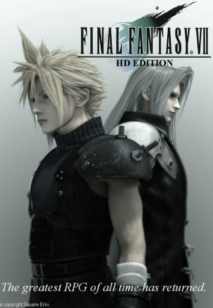
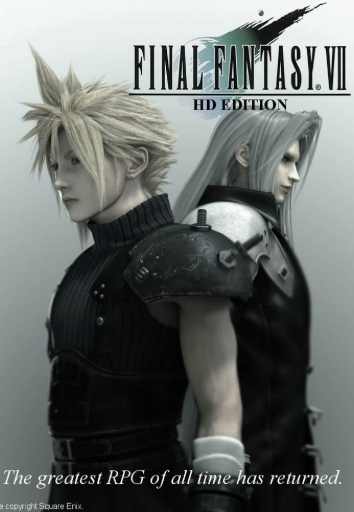

Devil May Cry


Para los amantes de historias intensas, lazos familiares tan retorcidos como entrañables y una gran sed de acción, llega Devil May Cry que más allá de ser un videojuego es una experiencia.
Su protagonista es Dante, quien es más que un simple cazador de demonios, puesto que es el hijo de Sparda uno de los demonios mas poderosos del inframundo, un ser que, contra todo pronóstico eligió proteger a la humanidad. Tras perder a su familia y a muchas personas importantes en el proceso, Dante acoge ese mismo deber, enfrentándose así a múltiples criaturas salidas del averno cada una más peligrosa que la anterior, mientras intenta mantener un ápice de humanidad en un mundo que parece haberla olvidado. Pero entre balas, espadas y enfrentamientos infernales, Dante se topa con algo inesperado: su hermano gemelo, a quien creía muerto. Y ese reencuentro, lejos de ser una reconciliación, desencadena un conflicto aún más profundo.
Es una saga que brilla por si sola, teniendo combates estilizados, una ambientación oscura pero fascinante, y personajes inolvidables, haciendo de cada entrega una explosión de estilo, drama, sarcasmo y mucha actitud.
Más InformaciónResident Evil

Cuando el miedo ya no puede paralizarte, lo único que queda es transformarlo en impulso. En un mundo donde el fin fue el resultado de una decisión mal tomada (otra vez más el ser humano jugando a ser dios) nace Resident Evil: un universo donde la humanidad ha sido casi completamente erradicada, y el horror reina en cada rincón.
Cada entrega tiene su propia esencia, sus propios sobrevivientes, y una trama que va mucho más allá de una simple historia de terror o suspenso. Es una saga donde el concepto de “apocalipsis” toma un nuevo rumbo, uno que convierte a cada personaje en un símbolo de resistencia.
Porque en Resident Evil, no se trata solo de sobrevivir. Se trata de seguir adelante aun cuando todo está perdido. Se trata de aferrarse a la chispa más pequeña de esperanza, incluso cuando el mundo entero ya se ha apagado.
Más InformaciónFinal Fantasy
 

Esa sensación que se queda contigo después de presenciar algo verdaderamente hermoso… es lo que sucede cuando juegas Final Fantasy. Una historia, o mejor dicho, muchas historias que de alguna forma siempre dejan una marca, como si te escribieran con fuego en la mente y en el corazón.
Final Fantasy representa lo que significa ser un héroe: cómo el peso de tantas responsabilidades puede hacer que caigas una y otra vez… y aun así, sigas. Es una obra que disfraza las despedidas más dolorosas con ternura, que viste de amor las pérdidas inevitables.
Es una belleza fugaz, tejida con amor, guerra, pérdida y, sobre todo, búsqueda de identidad. Llena de personajes tan profundamente humanos, que, aunque no existan en nuestro mundo, logran despertar una empatía que atraviesa la pantalla. Porque a veces, la fantasía se parece demasiado a la realidad. Y nos recuerda que los finales no siempre son felices… pero sí profundamente humanos.
Más Información